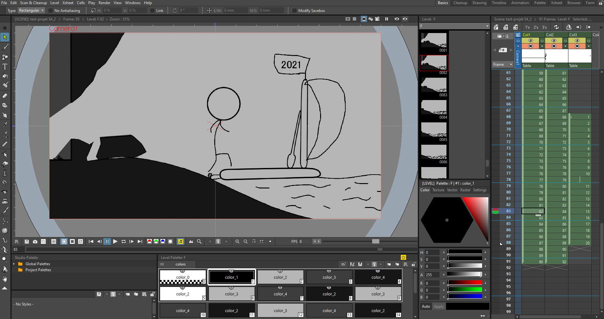

Motion Design : Rewind de mon année 2020
Janvier 2021 - Avril 2021
Motion Design - Semestre 4
Présentation du projet
Pour ce projet individuel, nous devions réaliser une animation qui représentait notre année 2020, ce qu'on a ressentit, notre environnement, ce qui nous as marqué. Nous devions effectuer une vidéo d'une durée de 1 minutes et 30 secondes. Nous avions le droit d'utiliser toutes les sources vidéos, images, sons ou musiques. Nous devions rédiger une narration en anglais qui appuie le resssenti de notre année.
Choix du scénario
J'ai décidé d'exprimer les sentiments que j'ai pu éprouver durant mon année 2020. J'ai choisi de faire une sorte de suivi chronologique. Et d'exprimer mes sentiments par le plus de moyens possible.
Les tâches à effectuer
Dans le cadre de ce projet, j'ai dû faire un brainstorming et un corpus, afin de pouvoir retrouver toutes les idées que j'aurais pû avoir. Une fois cela fait, j'ai rédigé mon script, puis j'ai commencé de récupérer ou de créer les éléments graphiques que je comptais utiliser pour le montage. Et pour finir, j'ai du créer un storyboard expliquant les diférents moments de mon montage.* Pour la partie de réalisation nous avons jusqu'au 12 avril 2021 pour le finir, revenez donc le voir une fois que je l'aurais fini.
Logiciels utilisés :

Scénarisation
Idée de scénario
Pour le scénario, j'ai choisi de faire une introduction et une conclusion animé en dessin simpliste et en noir et blanc. Puis, pour le plus gros du contenu, j'ai décidé de faire une animation de balle qui rebondit sur un fond animé. Cette balle va garder le même rythme, mais elle va changer de textures ou de couleurs selon le sentiment présent durant la vidéo. Pour le fond, il va évoluer au fil du temps. C'est un paysage qui va voir défilé les saisons afin de montrer notre avancée dans l'année. J'ai choisi de montrer le plus possible les sentiments que j'ai pu avoir durant cette année 2020. J'ai choisi de rédiger mon script en remémorant les événements et en m'enregistrant pour avoir une voix qui puisse transmettre le sentiment en question.
Choix de la musique
Pour la musique, nous étions libre de choisir celle que l'on voulait. J'ai donc choisi Isolated System de World War Z qui a été créé par le groupe de musique Muse.
Script
Tout d'abord, j'ai noté toutes les idées qui me sont passées par la tête. Puis, j'ai choisi celle qui me semblait la plus intéressante. Une fois que mon idée choisie, j'avais déjà fait le choix de la musique qui va accompagner ma vidéo.
Ensuite , j'ai dû réflêchir au script que je voulais dans ma vidéo. Et j'ai fini par choisir d'utiliser des poèmes japonais (Haïkus). Je me suis renseigné à leurs sujets, afin de pouvoir rédiger de véritables Haïkus. Ces poèmes sont composés de 3 vers de 17 (5-7-5) syllabes en japonais, mais en anglais le nombre de syllabes passent de 17 à 11 (3-5-3). Ils utilisent le plus souvent les saisons pour se relier à notre réalité. J'ai donc, préparé des événements principaux dans mon année 2020 et je leur est associé des sentiments. Puis j'ai rédigé mes Haïkus en respectant toutes les règles nécessaires, plus celles que je me suis fixées en plus.
Règles pour rédiger un Haïku
Mes Haïkus
Création d'une animation
Pour l'introduction et la conclusion, j'ai utiliser OpenToonz afin de pouvoir créer mon animation images par images. Voici quelques extraits de mon intro et de ma conclusion.
Introduction
Conclusion
Création des paysages de fonds
Pour les paysages de fonds, je me suis inspiré de paysages vectoriels déjà existant. Voici quelques exemples de ces paysages.
Paysages

Création des carillons
J'ai décidé en plus de la voix OFF, d'afficher mes Haïkus, lorsque la voix OFF sera en train de les dire. Voici un exemple de carillons.
Création du storyboard
Pour le storyboard, j'ai repris les différents éléments que j'avais créer et j'ai expliquer les idées et envies que j'avais.
Storyboard

Réalisation
Pour la partie réalisation, je suis actuellement en train de travailler dessus. Je vous invite donc, à patienter encore un peu pour l'arrivée prochaine de ma vidéo.